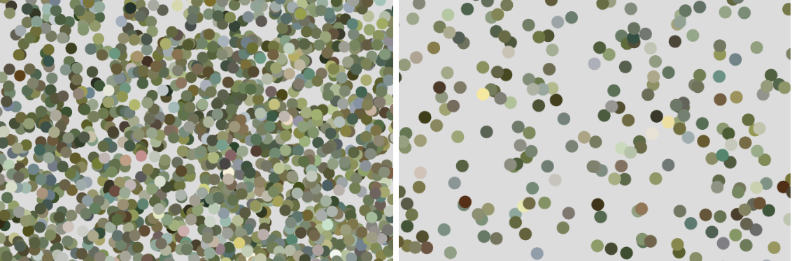

Experiment 3 - Generative Methods
Imitate
I had a few ideas I wanted to experiment with, but ultimately decided to play around with generative particles. I wanted to take an image and turn it into particles that would be moving around the screen. The user would use the mouse to steady the particles and it would put the image back together. The image that I wanted to create this effect on is a meaningful image for me. The painting “Bridge over a Pond of Water Lilies” by Claude Monet was the image of my choice.
The next step was to search for an example to understand how particle movement works. Searching through Generative Design I found example P_2_1_2_04 . This design has a glass shatter effect in which each individual piece moves depending on the mouse location on the screen. If you move the mouse correctly, the shattered pieces will come together.
Integrate
My first step to this experiment would be first figuring out how to preload an image into the sketch file. I went searching in the p5.js editor example page and searching for any examples that had the word image in. The first example that popped up was “Image: Load and Display Image” by p5. I did come across an issue in which p5.js doesn’t load png images, only jpg images.
With the image loaded in, my next step was to figure out how to get the image to initially load in as random particles for each pixel in the image. With another quick google search I was able to come across the example, “Picture Particles” by BarneyCodes. In this example the image was turned into circular particles that could be manipulated with mouse movement. This would serve as my starting point as I still want to expand on this example even further. The first thing I needed to do was to get each pixel in the painting to show up as circular particles. After some thought, it would have been too much for my computer to handle if I tried to make each pixel a particle. Instead I created a nested for loop that would take every 5x5 pixel and create a particle out of it.
Innovate
The following step I knew would be a bit difficult to figure out. I wanted to have each particle continuously moving around the canvas randomly. As before I went back to the p5.js examples to search for particle movement. I came up with the following results about Particles.
Using this example I set the particles to a random velocity. However, I ran into a problem that wasn’t so obvious right away. I didn’t take into account that adding velocity to the particles could move them out of the canvas space and make it impossible to get the particles back on the visible canvas page. As you can see the canvas particles look normal on the left, but after 30 seconds, the particles are almost all off the canvas.
Once I realized this issue I came up with a pretty simple solution. In my update function, where I handle the particle movement, I added in a check that would look to see if the particle has reached the canvas edge. If so the particle will bounce off the wall to stay on the canvas
I wanted to create this effect that depending on the mouse location the pixels would snap back to their original location to reveal the image. This was proving to be very challenging as everything I was trying was not working. I was trying to store the original starting location of the particle so that whenever the mouse was over the canvas the particles would move back to their original position. However, it looked like the particles were not properly remembering their starting location. Since it wasn’t clear on why the particles were not moving when the mouse was on the canvas I decided to add a transparent circle around the cursor so I could easily track all the movement of the cursor. Since I could now see the detention radius of the cursor I wanted to tackle my problem by having the particles that are in that radius move back to their original spot.
I realized that I had my particles moving back to their origin, but they would only stop moving if I kept holding down the left mouse button. I needed to add a flag, so the particles would stop moving once that flag has been triggered. With this I was able to fix my particle movement once they reached their origin.
Reflection
I completed this experiment independently. Initially, setting up the experiment was fairly easy with the help of a few Google searches. Preloading an image and converting the image pixels to particles ended up being the easiest part of the experiment for me. This simply consisted of creating for loops to generate 5x5 pixel grids and combining the pixels in that area into one particle. The toughest part was getting the particles to stop moving once I clicked on them to send them back to their original location. I spent several days trying to figure out a solution for this issue. In the end, a simple boolean flag fixed my problem. I had attempted multiple solutions that all led me back to my previous point, where I only had the experiment set up with particles moving around the canvas. For a while, I considered completely changing my approach to the experiment, but I became determined to find a solution. This art piece has a strong connection with me, as it is my partner's favorite painting. I wanted to contribute a piece for them since they have been a great influence in my life.
Results
Press Delete: Reset Canvas
Left Click: Place Particles Back to Origin.